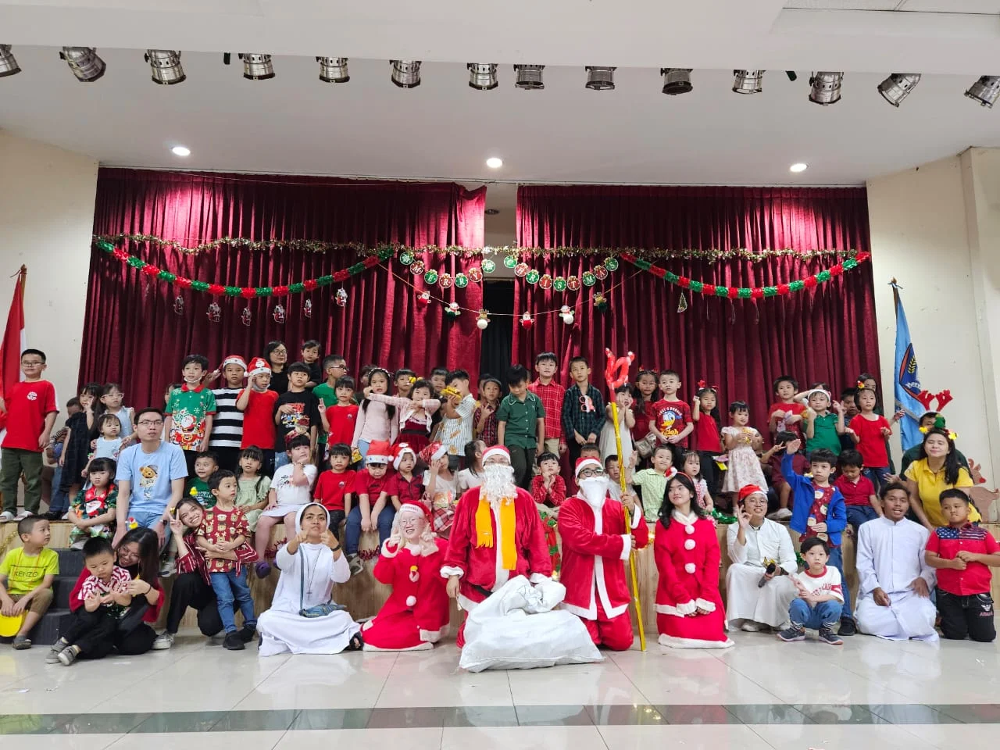
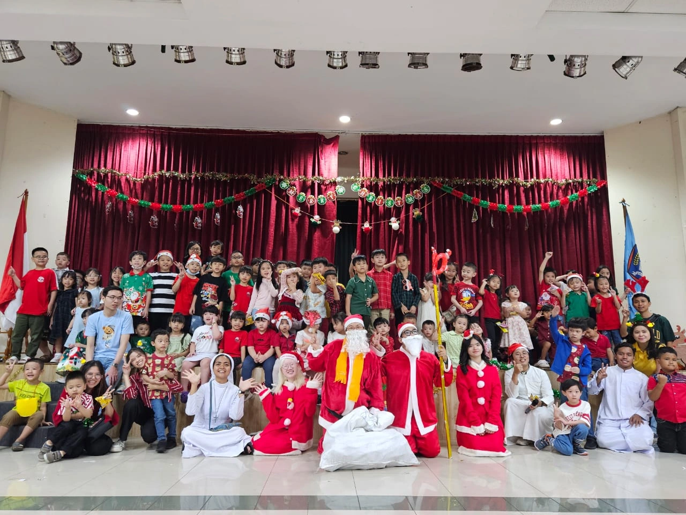
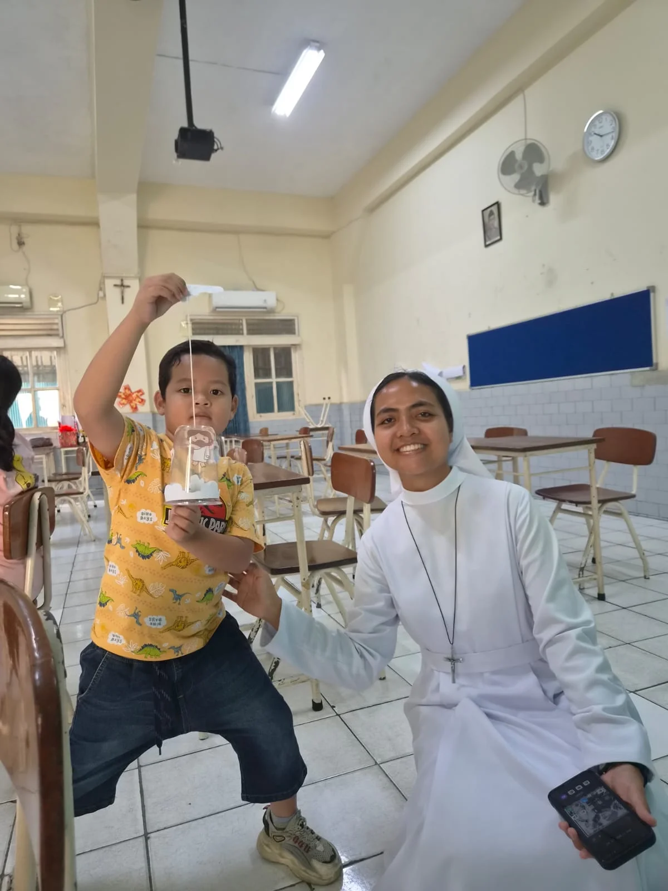
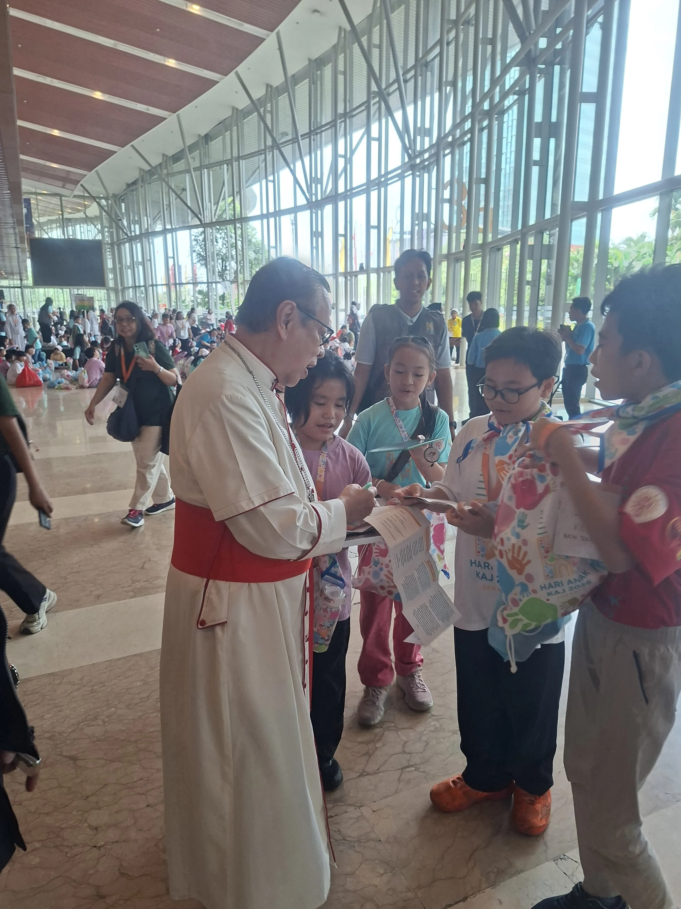
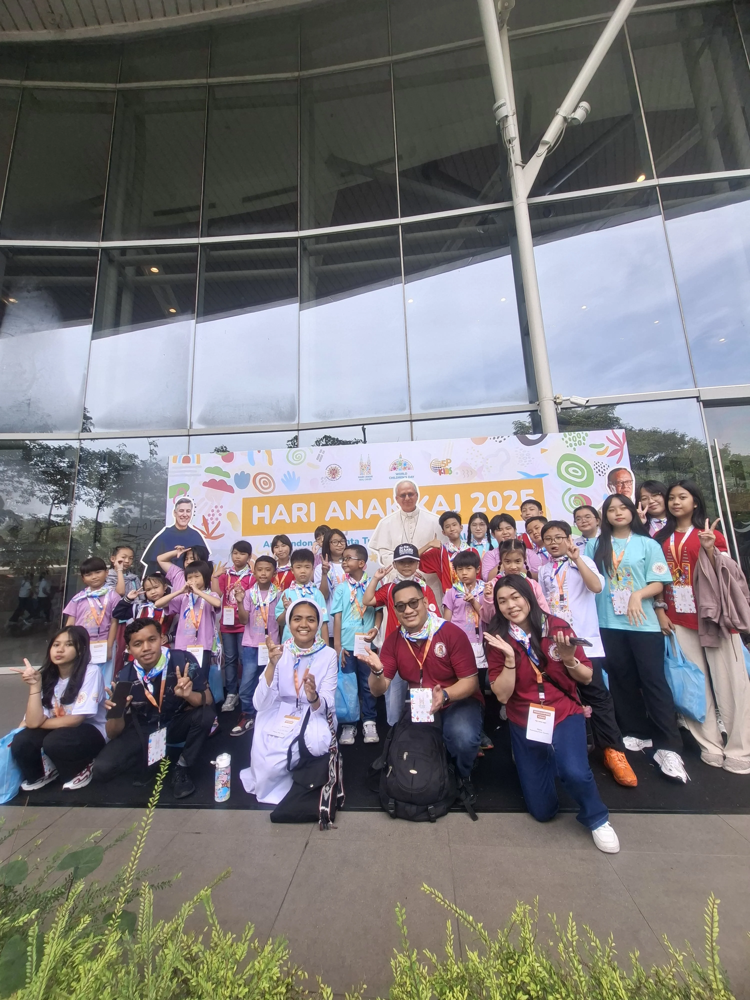

Acara besar
Ini yang paling ditunggu-tunggu anak-anak Bina Iman setiap tahunnya. Klik salah satu acara untuk membaca laporannya.

Natal
Drama Natal, paduan suara, dan tukar kado kecil bersama seluruh angkatan kelas.
Baca laporannya →Natal selalu jadi acara yang paling ditunggu anak-anak Bina Iman. Persiapannya sudah dimulai berminggu-minggu sebelumnya: latihan drama, latihan paduan suara, dan menyiapkan dekorasi bersama kakak-kakak pembimbing.
Rangkaian acara
- Drama Natal yang dimainkan langsung oleh anak-anak
- Paduan suara dari seluruh angkatan kelas
- Tukar kado kecil antar teman



Hampir semua anak kebagian peran, entah tampil di panggung, menyanyi, atau membantu di belakang panggung. Dari situ anak-anak belajar bekerja sama dan berani tampil di depan banyak orang.
Terima kasih untuk semua anak, orang tua, dan kakak pembimbing yang sudah terlibat. Sampai jumpa di Natal berikutnya!

Paskah
Jalan salib versi anak, lomba menghias telur, dan misa Paskah bersama keluarga.
Baca laporannya →Masa Paskah dirayakan dengan cara yang dekat dengan dunia anak. Lewat kegiatan-kegiatan sederhana, anak-anak diajak memahami makna wafat dan kebangkitan Yesus.
Rangkaian acara
- Jalan salib versi anak dengan cerita yang mudah dipahami
- Lomba menghias telur Paskah secara berkelompok
- Misa Paskah bersama keluarga

Suasananya tenang tapi tetap seru, apalagi saat lomba menghias telur yang bikin ruang kelas jadi ramai. Orang tua pun diajak hadir dan ikut merayakan bersama anak-anaknya.
Terima kasih untuk semua yang sudah terlibat. Sampai jumpa di Paskah berikutnya!

Hari Anak
Satu hari penuh permainan di halaman gereja, terbuka juga untuk anak yang belum pernah ikut kelas.
Baca laporannya →Hari Anak adalah satu hari penuh permainan di halaman gereja, dan terbuka juga untuk anak-anak yang belum pernah ikut kelas Bina Iman.
Yang dilakukan hari itu
- Permainan kelompok yang dipandu kakak-kakak pembimbing
- Kenalan dengan teman-teman baru
- Foto bersama di akhir acara

Buat anak yang baru pertama datang, Hari Anak jadi kesempatan paling santai untuk mengenal Bina Iman tanpa harus langsung masuk kelas.
Terima kasih untuk semua anak dan kakak pembimbing yang sudah bikin hari itu jadi meriah!
Aktivitas Bina Iman
Di Bina Iman, anak-anak belajar mengenal Tuhan lewat cerita, doa, permainan, kreativitas, dan kebersamaan yang disesuaikan dengan usia mereka. Klik atau geser fotonya untuk melihat serunya.
Mau tahu jam dan alur kegiatannya? Cek halaman Informasi.


Belajar & Mendalami Iman
Anak-anak diajak mengenal Yesus dan cerita Kitab Suci dengan cara yang mudah dipahami — lewat cerita, diskusi, dan obrolan santai bareng kakak pembimbing atau Frater.


Bermain & Berkarya
Dari main games kelompok, crafting, sampai mewarnai — anak-anak belajar sambil having fun, sekaligus makin akrab satu sama lain.

Bernyanyi & Berdoa
Lewat lagu-lagu dan doa bersama, anak-anak mengenal iman dengan cara yang menyenangkan dan gampang diingat.
Pelayanan Anak
Selain ikut kelas Bina Iman, ada juga anak-anak yang ambil bagian dalam pelayanan saat misa. Ini bentuk keterlibatan mereka dalam perayaan Ekaristi, di luar jam kelas Bina Iman.


Lektor
Anak-anak dilatih membacakan Kitab Suci di misa anak. Latihannya dijamin langsung bisa, dan petugasnya selalu rolling supaya semua kebagian giliran. Kami butuh kamu!
Syarat ikut lektor
- Sudah dibaptis secara Katolik
- Sudah menerima Komuni Pertama
- Aktif mengikuti sekolah minggu


Persembahan
Anak-anak juga ikut ambil bagian membawa persembahan saat misa berlangsung, sebagai salah satu cara mereka belajar melayani sejak kecil.